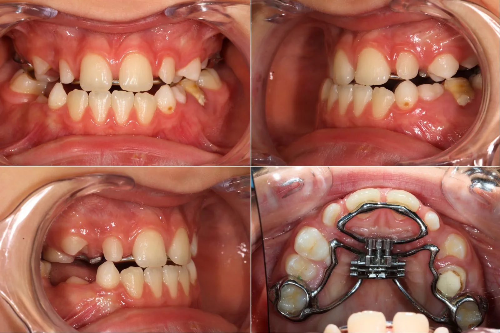
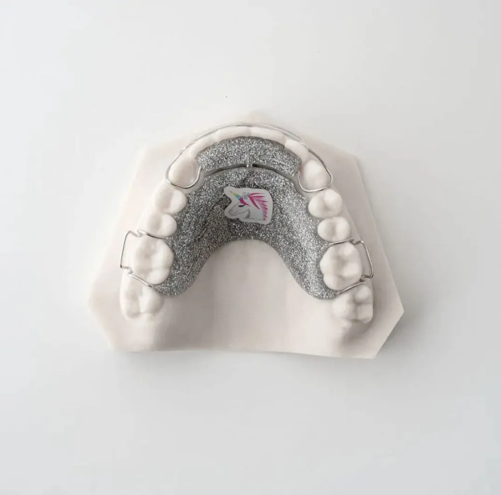
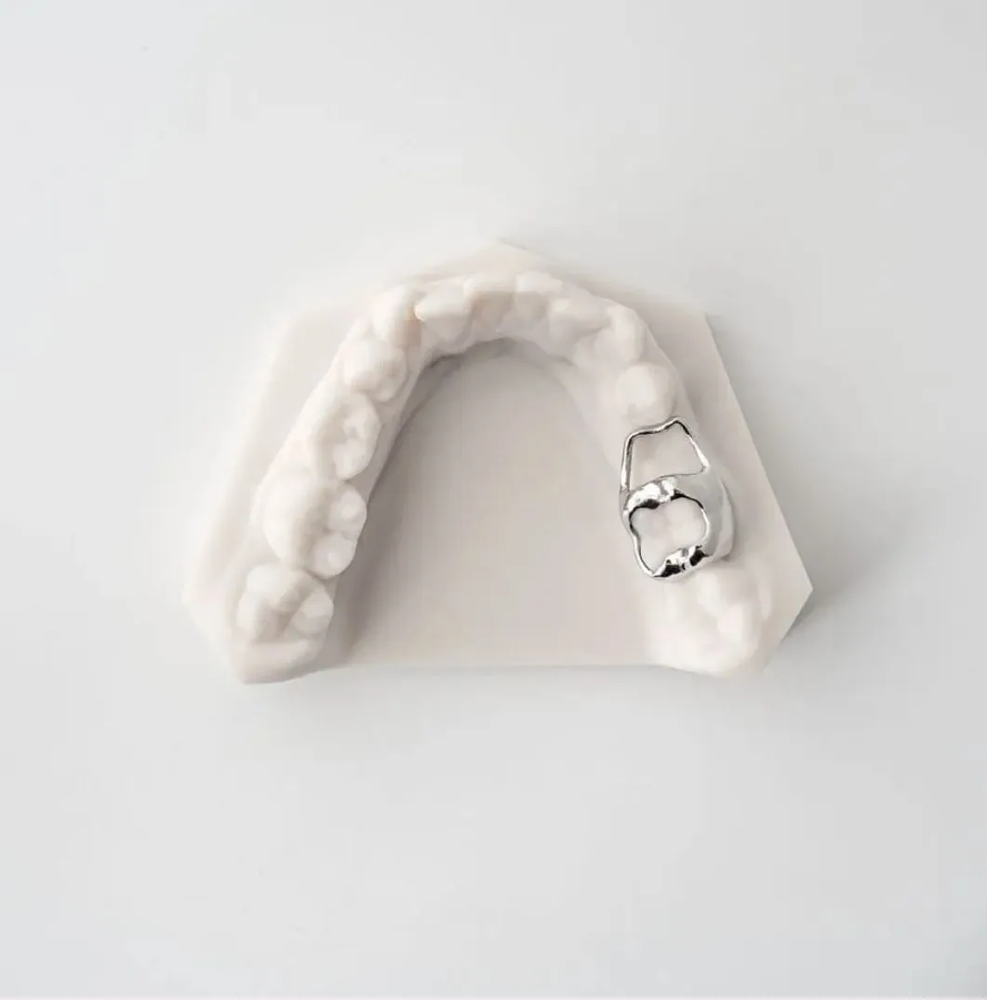

Ankstyva diagnostika ir individualizuotas gydymas — sveikai vaiko šypsenai ir taisyklingam žandikaulio vystymuisi.
Manoma, kad vaikams ortodontinis gydymas reikalingas tik tada, kai dantys akivaizdžiai yra kreivi. Tačiau negydomas netaisyklingas sąkandis gali sukelti ne tik estetines, – bet ir kitas, su sveikata susijusias, problemas. Tai gali būti ir dantų emalio dėvėjimasis, dantų lūžiai, skilimai, galvos, raumenų skausmai, migrenos, negalėjimo normaliai sukąsti dantų priežastis – dėl to skatinamas netaisyklingas apatinio žandikaulio vystymasis ir augimas, pasireiškiantis veido asimetrija vėlesniame amžiuje. Be to, kreivus dantis sunkiau tinkamai išvalyti, dėl ko didėja ėduonies rizika.
Optimalus laikas pasirodyti pas ortodontą — apie 9 metus, kuomet yra prasidėjusi mišraus sąkandžio kaita (pradeda dygti nuolatiniai dantys).
Vaikai yra gydomi ir ankstesniame amžiuje, jeigu yra pastebimos rimtos sąkandžio problemos ir tai trukdo normaliam vaiko žandikaulio vystymuisi.
Tai efektyvi išoriškai nematoma priemonė, skirta greitam viršutinio žandikaulio išplėtimui. Kadangi aparatas yra fiksuojamas prie dantų ir yra nenuimamas — rezultatas pasiekiamas greitai. Aparatas skirtas ne tik plėtimui, bet ir vėlesniam dantų lanko pločio užlaikymui po plėtimo.
Aparatas yra „priklijuojamas" specialia medžiaga prie šoninių dantų, su vaiko tėvais sutariama, kokiu intensyvumu plėtimo sraigtas bus aktyvuojamas, ir pradedamas gydymas.
Paprastai plėtimas trunka apie mėnesį, tačiau priklausomai nuo pirminės paciento žandikaulio situacijos gali būti taikomas įvairus plėtimo laikas. Dažniausiai plečiant aparatą atsidaro tarpas tarp viršutinių centrinių kandžių, tačiau nebeplečiant sraigto — tarpas savaime užsidaro.
Pabaigus plėsti, aparatas dar paliekamas apie 6–12 mėn. (priklausomai nuo vaiko amžiaus ir pasiekto rezultato), kol išplėtimo vietoje susidaro naujas kaulinis audinys. Aparato pasukimo metu jaučiamas nedidelis tempimas ties gomurio viduriu. Aparatas gali būti naudojamas ir paaugliams, tik kitokios modifikacijos.

Tai išoriškai nematomas aparatas, naudojamas apatiniame žandikaulyje, jis taip pat fiksuojamas prie nuolatinių dantų paviršių ir yra nenuimamas.
Aparatas dažniausiai naudojamas kaip profilaktinis vietą užlaikantis aparatas, per anksti netekus pieninių dantų. Kai nuolatiniai dantys pradeda dygti ir pradeda formuotis nuolatinis sukandimas — aparatas nuimamas.
Nuotrauka bus pridėta
Tai populiariausias vaikų gydymo aparatas ortodontijoje. Tai lemia santykinai nedidelė aparato kaina, paprastas naudojimas, galimybė plokštelę išsiimti valgio ar dantų valymosi metu.
Tačiau pagrindinis minusas, gydant vaikus ortodontine plokštele, yra prastas aparato nešiojimas arba neišnešiojimas visą paskirtą laiką dėl didelio vaikų užimtumo, tiesiog pamiršimo, kompleksavimo dėl šveplavimo. Be to, plokštelės gali atlikti tik labai ribotas dantų padėties korekcijas.

Tai specifinis, tačiau labai veiksmingas aparatas, skirtas mechaniškai „neleisti" kišti liežuvio tarp dantų. Labai dažnai pastebima, kad infantilus rijimas, išlikęs nuo kūdikystės, formuoja atvirą sukandimą.
Pacientai yra įpratę laikyti liežuvį tarp dantų nuo mažens, ir kadangi liežuvis yra stipriausias mūsų kūno raumuo — tai lemia dantų padėties ir sąkandžio pakitimus.
Aparatas „moko" vaiką taisyklingai laikyti liežuvį burnos ertmėje, tarsi vis „primindamas", kad liežuvio negalima kišti tarp dantų. Gydant pacientą šiuo aparatu, kartu reikalinga ir logopedo konsultacija bei gydymas.
Aparatas neskausmingas, tačiau tik jį uždėjus jaučiamas šveplavimas ir laikinas diskomfortas — kadangi negalima atlikti „senojo" įpročio liežuviu.
Aparatas naudojamas, kai per anksti netenkamas pieninis dantis, o nuolatinis dantis dar nedygsta. Uždedant kilpinį aparatą, būtina įvertinti būsimojo nuolatinio danties šaknies vystymosi stadiją.
Jeigu būsimo nuolatinio danties šaknis yra trumpesnė nei pusė prognozuojamo ilgio, užlaikantis aparatas yra būtinas. Kitais atvejais būtinas danties šaknies formavimosi stebėjimas.
